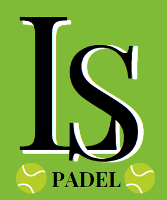

"Somos una fundación apasionada por el pádel y comprometida con el desarrollo integral de las personas a través de este maravilloso deporte.
Nuestro objetivo es fomentar la práctica del pádel como una herramienta para promover la salud, la inclusión social y los valores fundamentales.
En nuestra fundación, creemos en el poder transformador del pádel. No solo nos enfocamos en la enseñanza y el entrenamiento técnico, sino también en la formación de habilidades sociales, el trabajo en equipo y el espíritu deportivo.
Queremos brindar a jóvenes y adultos la oportunidad de disfrutar de este deporte en un ambiente acogedor y familiar, promoviendo la actividad física y el bienestar emocional.
Además, colaboramos estrechamente con otras organizaciones y comunidades locales para llevar el pádel a aquellos que pueden enfrentar barreras económicas o sociales.
Realizamos programas de inclusión y brindamos acceso equitativo a instalaciones y equipamiento adecuados.
En nuestra fundación, el pádel es más que un juego; es una plataforma para el crecimiento personal, la integración comunitaria y la construcción de relaciones significativas.
Nos enorgullece ser una parte activa de la comunidad del pádel y esperamos seguir expandiendo nuestro impacto positivo en la vida de las personas.
¡Únete a nosotros y descubre cómo el pádel puede cambiar vidas!"
Nuestra Historia
Había una vez en un pequeño pueblo llamado Villa Verde, rodeado de hermosos paisajes verdes y una comunidad apasionada por el deporte. En este lugar, un grupo de amigos tenía una gran pasión por el pádel, un deporte que comenzaba a ganar popularidad en la región.
Estos amigos, compuestos por Lucas, Martín, Carolina y Sofía, pasaban la mayoría de sus tardes jugando y disfrutando del pádel en las canchas locales. A medida que su amor por el deporte crecía, también lo hacía su deseo de compartirlo con los demás y crear un impacto positivo en su comunidad.
Un día, mientras conversaban sobre sus sueños y aspiraciones, surgió la idea de formar una organización que promoviera el pádel de manera inclusiva y sostenible. Querían no solo fomentar la práctica del deporte, sino también proteger el medio ambiente y brindar oportunidades a aquellos que no tenían acceso fácilmente al pádel.
Decidieron llamar a su organización "Fundación Green Padel", ya que el verde representaba tanto su amor por la naturaleza como la esperanza de un futuro mejor a través del deporte. Con mucha determinación, comenzaron a trabajar en su visión. Se pusieron en contacto con las autoridades locales y consiguieron un terreno donde construirían su complejo de pádel. Sin embargo, tenían una condición: debían asegurarse de que el complejo fuera respetuoso con el medio ambiente.
La Fundación Green Padel se asoció con arquitectos y diseñadores especializados en la construcción sostenible. Juntos, crearon un complejo de canchas de pádel que aprovechaba la energía solar y la recolección de agua de lluvia. Además, utilizaron materiales ecológicos en la construcción y promovieron la reforestación en los alrededores.
Para hacer que el pádel fuera accesible para todos, la fundación estableció programas de becas y apoyo para aquellos con recursos limitados. Ofrecieron clases gratuitas a niños de escuelas locales y organizaron torneos comunitarios, donde todos podían participar sin importar su nivel de habilidad.
Además, la Fundación Green Padel creó un programa de concientización ambiental. Organizaron jornadas de limpieza en los parques y bosques cercanos, promovieron la separación de residuos y educaron a la comunidad sobre la importancia de cuidar el entorno natural.
Con el tiempo, la Fundación Green Padel se convirtió en un referente en el mundo del pádel y la sostenibilidad. Su impacto positivo no solo se limitaba a Villa Verde, sino que se expandió a otras comunidades y ciudades cercanas.
La historia de la Fundación Green Padel es un testimonio de cómo una pasión compartida por el deporte y el medio ambiente puede transformar vidas y comunidades. Gracias a su dedicación y compromiso, lograron crear un espacio donde el pádel y la sostenibilidad se unieron en armonía, inspirando a otros a seguir su ejemplo y construir un mundo mejor.